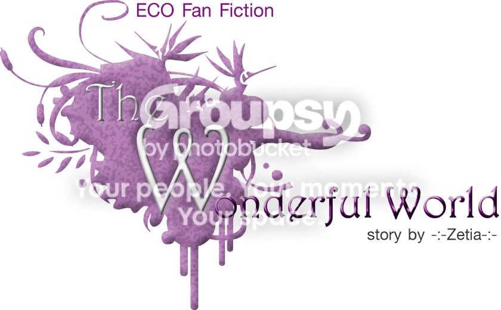

แมว เขียน:
- โค้ด: เลือกทั้งหมด
[img]http://i266.photobucket.com/albums/ii250/ukritoneko/logos.png[/img]
- โค้ด: เลือกทั้งหมด
[img]http://i266.photobucket.com/albums/ii250/ukritoneko/Rise--Silver---Heartof-logo.png[/img]
- โค้ด: เลือกทั้งหมด
[img]http://i266.photobucket.com/albums/ii250/ukritoneko/logo-illus-b.jpg[/img]
- โค้ด: เลือกทั้งหมด
[img]http://i266.photobucket.com/albums/ii250/ukritoneko/logo-illus.jpg[/img]


เตรียมไว้ให้เจ๊เทียร์เงี๊ยวววว

 จริงอ่ะ) จ้าส์ แฮ่ส์~
จริงอ่ะ) จ้าส์ แฮ่ส์~
 แว้บๆ
แว้บๆ